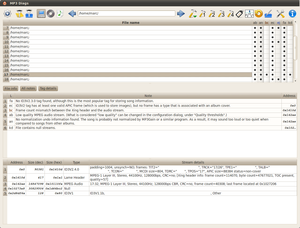
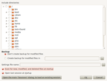

MP3 Diags
Dieser Artikel wurde für die folgenden Ubuntu-Versionen getestet:
Ubuntu 16.04 Xenial Xerus
Ubuntu 14.04 Trusty Tahr
Zum Verständnis dieses Artikels sind folgende Seiten hilfreich:
MP3 Diags  hilft beim Aufspüren und Reparieren fehlerhafter MP3-Dateien. Neben einer ausführlichen Analyse können Fehler auch direkt korrigiert werden, unter anderem die falsche Spieldauer von VBR-Dateien. Alben oder Sampler werden auf Wunsch mit MP3Gain normalisiert, für ID3-Tags gibt es einen integrierten Editor.
hilft beim Aufspüren und Reparieren fehlerhafter MP3-Dateien. Neben einer ausführlichen Analyse können Fehler auch direkt korrigiert werden, unter anderem die falsche Spieldauer von VBR-Dateien. Alben oder Sampler werden auf Wunsch mit MP3Gain normalisiert, für ID3-Tags gibt es einen integrierten Editor.
Weitere Programme (für die Kommandozeile) zur Diagnose und Reparatur von MP3-Dateien sind im Artikel Überprüfung MP3-Sammlung zu finden. Von diesen hebt sich MP3 Diags durch seine grafische Oberfläche und seine außerordentlich vielseitigen Bearbeitungs- und Korrekturfunktionen ab:
|  |
| MP3 Diags |
Audiodaten:
defekte, lückenhafte oder unbekannte Kodierung
Header-Informationen (Xing, LAME und VBR)
Metadaten:
Das Programm ist bisher nicht ins Deutsche übersetzt – Programmoberfläche und Hilfe sind komplett auf Englisch. Auch die Bedienung ist auf den ersten Blick ungewöhnlich, da ein klassisches Hauptmenü fehlt. Das Programm arbeitet ausschließlich mit Symbolen für die diversen Funktionen, die aber durch Tooltipps erklärt werden.
Installation¶
 Das Programm lässt sich über die folgenden Pakete installieren [1]:
Das Programm lässt sich über die folgenden Pakete installieren [1]:
mp3diags (multiverse)
mp3diags-doc (optional, englisches Handbuch)
 mit apturl
mit apturl
Paketliste zum Kopieren:
sudo apt-get install mp3diags mp3diags-doc
sudo aptitude install mp3diags mp3diags-doc
Wer zusätzlich mit MP3Gain normalisieren möchte, benötigt noch:
mp3gain (universe, optional, nur bis Ubuntu 14.04)
mit apturl
Paketliste zum Kopieren:
sudo apt-get install mp3gain
sudo aptitude install mp3gain
Fremdpakete¶
Über den OpenSuse Build Service  (siehe auch OBS) stehen aktuelle DEB-Pakete zur Verfügung, die einfach heruntergeladen und manuell installiert werden können.
(siehe auch OBS) stehen aktuelle DEB-Pakete zur Verfügung, die einfach heruntergeladen und manuell installiert werden können.
Hinweis!
Fremdpakete können das System gefährden.
Manuell¶
Die aktuellste Version steht auch als vorkompiliertes Binärpaket zur Verfügung und kann über SourceForge für 32-bit- (i686) oder 64-bit-Systeme (x86_64) heruntergeladen werden. Nach dem Herunterladen und Entpacken steht das Programm sofort zur Verfügung. Diese Installationsvariante wird allerdings nur Fortgeschrittenen empfohlen, da u.U. noch fehlende Abhängigkeiten nachinstalliert werden müssen.
Verwendung¶
 Der Programmstart erfolgt bei Ubuntu-Varianten mit einem Anwendungsmenü über "Multimedia -> MP3 Diags". Beim ersten Start werden verschiedene Dinge abgefragt. Zum einen kann man den Ordner auswählen, der zu überprüfende Audiodateien enthält. Des weiteren, ob eine automatische Sicherungskopie der bearbeiteten Dateien erstellt werden soll (empfehlenswert!). Zwingend erforderlich ist die Angabe einer .ini-Datei, in der diese Einstellungen gespeichert werden. Ob man diese Sitzung beim nächsten Programmstart automatisch wiederherstellen lassen möchte, richtet sich nach dem persönlichen Bedarf.
Auf der Projektseite ist ein sehr ausführliches Handbuch zu finden, das auch als lokale Kopie unter /usr/share/mp3diags-doc/html/index.html verfügbar ist. Die Taste
F1 ruft kontextsensitiv die entsprechende Handbuchseite aus dem Internet auf.
In der nachfolgenden Tabelle finden sich die Grundfunktionen.
| MP3 Diags | |
| Schaltfläche | Beschreibung |
| Sammlung einlesen | |
 | Sammlung filtern (nach Ordnern oder Analyseergebnissen) |
| Verschiedene Möglichkeiten, die Dateien zu verändern (Transformationen) | |
| ID3-Tags bearbeiten | |
| Konfiguration (siehe oben) | |
Sammlung einlesen¶
Falls man Audiodateien z.B. unter ~/Musik im eigenen Homeverzeichnis gespeichert hat, wählt man diesen Ordner bei der Sitzungserstellung aus. Nach dem Start des Programms erfolgt über das Symbol als erstes das Einlesen der Dateien. Dieses erfolgt rekursiv, d.h. es werden auch sämtliche Unterordner berücksichtigt.
Hinweis:
Aufgrund der komplexen Analysefunktionen sollte man nicht erschrecken, wenn eine prinzipiell fehlerfreie Sammlung haufenweise "Fehler" produziert. Viele der Meldungen beziehen sich beispielsweise auf ID3-Tags, die aber keinen Einfluss auf die hörbare Qualität haben.
Sammlung filtern¶
Die Ergebnisse der Analyse lassen sich auf verschiedene Weise gefiltert darstellen. Mit zwei Pfeilsymbolen am oberen Rand des Programmfenster kann man durch die Ergebnisse blättern. Über die Symbole links davon erfolgt die Filterung. Zusätzlich wird eine Datei Sitzung.dat angelegt, die die (kodierten) Ergebnisse der Analyse enthält.
Transformationen¶
Über diese Schaltfläche sind in einer Liste sind häufig benötigte Bearbeitungsschritte oder Umwandlungen aufgeführt. Direkt daneben sind vier weitere Schaltflächen vorhanden, die mehrere Umwandlungen gebündelt ausführen (siehe auch Einstellungen).
ID3-Tags bearbeiten¶
MP3 Diags enthält einen vollwertigen Editor für ID3-Tags. In diesen Metadaten werden z.B. Interpret, Titel und Albumname gespeichert. Im Gegensatz zum Dateinamen lassen sich so viele nützliche Zusatzinformationen innerhalb einer MP3-Datei einbetten.
Praktisch ist zu berücksichtigen, dass es mindestens 2 Standards gibt: den älteren ID3v1 und den aktuellen ID3v2. ID3v2 wiederum ist in zwei relevante Versionen unterteilt: ID3v2.3 (Nutzung beispielsweise bei iTunes) und IDv2.4 (unter Linux in vielen Programmen der Standard). Sofern man sich es aussuchen kann, sollte man für eine weitestgehende Kompatibilität ID3v2.3 bevorzugen.
MP3 Diags kann ID3v2.3- und ID3v2.4-Daten lesen, geschrieben werden ausschließlich ID3v2.3-Tags. Interessant ist die Integration der Datenbanken von MusicBrainz und Discogs , mit denen sich nicht nur mit Stückinformationen, sondern auch Coverbilder ergänzen lassen. Speziell zur Kontrolle und Bearbeitung der ID3-Tags kann man aber bei Bedarf auch auf alternative Programme ausweichen.
Konfiguration¶
Über das entsprechende Symbol rechts oben im Programmfenster erfolgen die Einstellungen des Programms. Diese sind auf acht Reiter (Tabs) verteilt. Die Abschnitte im einzelnen:
| Einstellungen | |
| Abschnitt | Beschreibung |
| Files | Neben der Entscheidung, ob Sicherungskopien erstellt werden sollen, kann festgelegt werden, wie geänderte Dateien behandelt sollen (Löschen, Umbenennen, Nummerieren, etc.). |
| Ignored notes | Hier lässt sich detailliert festlegen, auf welche Fehler die zu untersuchenden Audiodateien geprüft werden werden. Was bei über 100 Fehlerquellen gruppiert in 14 Kategorien (a... - o...) auch dringend erforderlich ist, wenn man den Überblick nicht verlieren will. Praktischerweise lassen sich individuelle Einstellungen wieder bequem zurücksetzen. |
| Custom transformation lists | Diese Listen dienen zur Zusammenfassung mehrerer einzelner Bearbeitungsschritte. Vier durchnummerierte Listen sind bereits vordefiniert und zeigen nach Auswahl jeweils an, welche Schritte (aus allen vorhandenen) gebündelt auf Audiodateien angewendet werden können. |
| Transformation params | An dieser Stelle sind zwei Dinge zusammengefasst: zum einen der verwendete Zeichensatz bei der Konvertierung in ID3V2 und zum anderen die Schreibweise des Künstlernamens und anderer Textinformationen. |
| Visible Transformations | Wer bestimmte im Programm enthaltene Umwandlungen aus- oder einblenden möchte, kann das an dieser Stelle tun. Die linke Spalte enthält alle sichtbaren, die in der rechten Spalte werden ausgeblendet und damit vor dem Benutzer versteckt. |
| Quality thresholds | Ab welcher Bitrate bei (CBR-kodierten Dateien) von "schlechter" Tonqualität ausgegangen werden soll (Standard: kleiner als 192 Kbit/s bzw. kbps). Allerdings sollte beachtet werden, dass sich VBR-kodierte Dateien diesem Schema entziehen, da hier dynamisch nach Komplexität der Audiodaten kodiert wird. |
| Colors | Hier können Kriterien für eine unterschiedliche Farbdarstellung festgelegt werden. Man könnte beispielsweise die ID3-Tags der Versionen 2.3 und 2.4 durch zwei getrennte Farben anzeigen lassen. Eine andere Möglichkeit wäre, nur Dateien mit VBR-Kodierung einzufärben. |
| Others | Weitere allgemeine Programmeinstellungen sind hier zusammengefasst. Erwähnenswert ist die Möglichkeit, wie der Eintrag "Various Artists" beim Taggen behandelt werden soll. Zur Auswahl stehen iTunes oder Windows Media Player. |
Konfigurationsdaten werden im Ordner ~/.config/Ciobi/ im Homeverzeichnis gespeichert.
Tipps¶
 In der Praxis sollte man sich bei der Analyse auf ein Kriterium pro Durchlauf beschränken. Dies kann die Suche nach fehlerhaft kodierten oder defekten Titeln ("Knackser") oder nach unvollständigen Metadaten sein.
In der Praxis sollte man sich bei der Analyse auf ein Kriterium pro Durchlauf beschränken. Dies kann die Suche nach fehlerhaft kodierten oder defekten Titeln ("Knackser") oder nach unvollständigen Metadaten sein.
"defekte Audiodateien": Während fehlende Metadaten den Hörgenuss nicht trüben, sondern nur den Überblick in größeren Beständen erschweren, sind defekte Audiodateien ein absolutes KO-Kriterium – sprich solche Musikstücke möchte niemand haben. Da sich manche Titel unter Umständen nicht einfach neu aufnehmen lassen, kann man zumindest versuchen, die fehlerhaften Dateien zu reparieren.
"Metadaten": Auch um fehlende ID3-Tags zu finden oder die Vollständigkeit der Metadaten innerhalb der eigenen Musiksammlung zu überprüfen kann das Programm verwendet werden. Allerdings gibt es in diesem Bereich reichlich Konkurrenz, sprich es existieren noch weitere Programme, die hier weiterhelfen können. Leider kann man nicht nach defekten Covern suchen. Apropos Cover: es treten in der Praxis immer wieder Probleme auf, wenn diese zu groß sind. Die Abmessung 240x240 oder 500x500 Pixel sind ein praxistauglicher Kompromiss.
 weitere Programme
weitere Programme- Erstellt mit Inyoka
-
 2004 – 2017 ubuntuusers.de • Einige Rechte vorbehalten
2004 – 2017 ubuntuusers.de • Einige Rechte vorbehalten
Lizenz • Kontakt • Datenschutz • Impressum • Serverstatus -
Serverhousing gespendet von